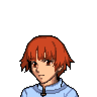

Approaching the Villagers



You call for the villagers, waving and walking to them. You keep your arms raised to show that you're unarmed. As you're finally face to face with them, you try to explain your situation of being lost in this land. One of the villagers, looking more elderly, says that no one knows the tongue that you speak, the language of the land below, aside from him. He talks to some villagers, and they nod at him. He tells you to follow them and that they'll show you your way back.